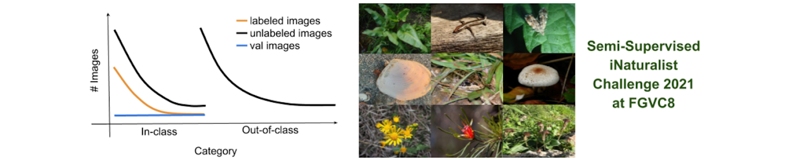
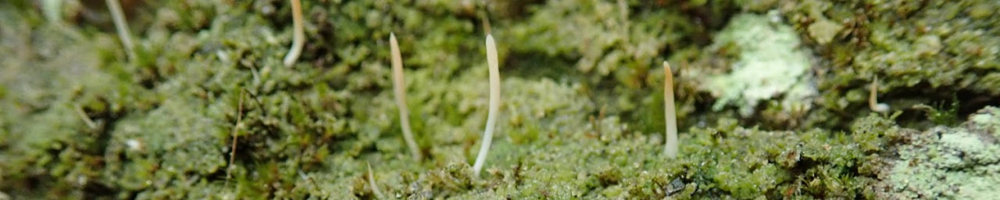
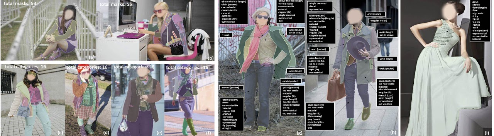
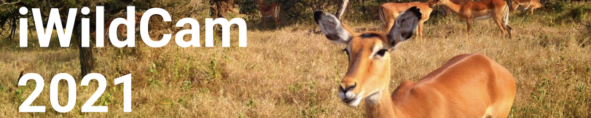
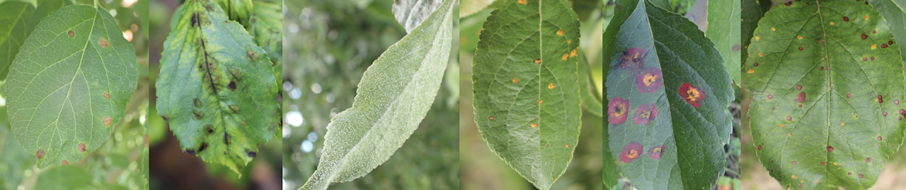

What is FGVC8?
FGVC8とは何か.
The Eight Workshop on Fine-Grained Visual Categorizationを省略した名前である.
皆さんは,CVPRをご存じであろうか.
コンピュータビジョンにおける世界最大級の学会発表である.
このCVPRによって開催されるコンペティションがFGVCと呼ばれ,このようなワークショップは今年度で8回目であることからFGVC8と呼ばれてる(コンペティションの数が8個であると勘違いしそうになったことは内緒である->対象となるコンペティションは9個存在する).
ここで少しばかり疑問が残るのではないでしょうか.
画像分類はこれまで多くの解決手法が提案され,素晴らしい実績を残して来ました.
要するに,もう分類問題はある程度のレベルまで到達しており,これ以降伸びしろが大きい分野ではないのではないか.という疑問です.
FGCVはFine-Grainedと名付けられています.
翻訳すると,細粒度という意味です.
つまりは,微小の特徴によって異なるカテゴリに分類することが可能な問題が今回のFGCVで求められているということです.
このようなきめ細かな情報に左右される問題に取り組むことは意義があり,今日の画像分類モデルにおいてもまだまだ改善の余地があるといったことから多くの方が取り組むべきに値する問題なのです.
コンペティションの種類

このコンペティションは,航空写真などを元に動植物の位置情報を予測するタスクです.
リモートセンシング画像,地表面画像,高度データ,生物気候データ,土壌データからGPS位置情報を予測する問題である.

このコンペティションの特徴は,ラベル付が曖昧であり,半教師あり学習を用いてタスクに取り組まなければならないことだろう.
ラベル付されている画像やラベル付されていない画像,勿論,クラス内全てにラベル付されている訳でもなく,同様に全ての画像にラベル付されていないクラスもある.
ラベル付されている画像を上手く活かしてラベル付されていない画像に適用させるか...
もしくは,最初から全ての画像がラベル付されていないと見なしてタスクに取り組むか...が難しい所である.

視覚的に無茶苦茶類似している画像データを分類する作業である.約10K種が存在し,データ数は2.7Mもある.
しかしながら,全てのクラスに50枚の画像が存在するミニデータセット(全然ミニじゃねーだろ!!)も用意されていることから多くの人が取り組むことは容易である分,上位に食い込むのが難しそうである.
只の分類問題に思えるこのコンペ...奥が深そうであるが,私みたいな初学者が取り組みやすそうな課題である.
こちらのコンテストも端的に言えば画像分類タスクである.
NYのメトロポリタン美術館に存在する0.2Mのアート画像を分類するタスクである.
あまり理解出来ていないが,最初にNYのメトロポリタン美術館での画像分類モデルを作成し,シカゴ美術館でのアート作品でモデルの評価を行うといったことなのだろうか...

物体検出に近いタスクなのかな?!
記事を書いてる時には,詳細情報はまだ載せられていない.
画像から,ファッションに関わる製品情報が何かを判断するタスクであると予想する.
人身売買被害の拡大を防止することを目的としたコンペティションである.
一般的に,人身売買における画像はホテルの部屋で撮影されることが多く,その部屋がどのホテルのものかを特定出来れば被害が防げるのではないかと予想される.
端的に言えば,多クラス分類問題である.
多クラスである理由は,trainデータ内に含まれている画像と類似する画像を判定するのが本タスクで要求されている事である.
また,画像内には,被害者がいる場合も多く,ホテルの部屋全体が写っていることは稀であるとも述べられているが,TraffickCamと呼ばれるサービスによって多くの協力者によるホテルの部屋全体が移されている画像も存在すると記述されている?!
65Kの品種が存在する2.5M枚の画像データを分類する問題である.
端的に言えば,分類問題であるが,ラベル毎の画像の偏りが少しばかりあるというのが特徴であろう.

今回紹介した9つのコンペの内,最も最難関な予感がするコンペティションである.
定点動画から動物の種毎の個体数を予測する課題である.
フレームごとに数が異なることが予想されるので,どのように対処するかが鍵であるが,今の私には解法が具体的に思い浮かばないことが自身の限界を示しているといっても過言ではないだろう.

葉の病気を判断する問題である.
あまりよく理解していないが,つまりは多クラス分類問題であると思われる.
葉の画像から何の病気に掛かっているか...かな?!